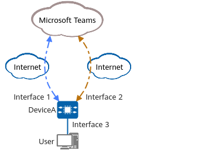

Example for Configuring SaaS Traffic Steering
Networking Requirements
In Figure 1, DeviceA has two Internet access links to access Microsoft Teams. Interface 1 (link 1) obtains an IP address and DNS parameters through DHCP, and interface 2 (link 2) obtains an IP address and DNS parameters through PPPoE dialup. A user connected to DeviceA often uses Microsoft Teams to join audio and video conferences. To ensure the quality of video conferences, the optimal link needs to be selected for accessing the Microsoft Teams application. You can configure SaaS traffic steering to meet this requirement.
SaaS traffic steering obtains the link detection result by tracking an NQA test instance. The detection mode is HTTP, the detection URL is the dedicated detection URL sdwan.measure.office.com provided by Microsoft, the detection period is 300s, the number of detection times is 10, and the detection interval is 10s. The optimal path mode is used for SaaS traffic steering to ensure that a new user can use the optimal link for video conferences when accessing the Teams application.

In this example, interface 1, interface 2, and interface 3 represent 10GE0/0/1, 10GE0/0/2, and 10GE0/0/3, respectively.

Configuration Roadmap
- Perform configurations on interfaces, including the VPN configuration, basic interface configuration, application identification configuration, and default route configuration.
- Configure an NQA test instance.
- Configure an application group for identifying service flows.
- Specify path indexes and configure a SaaS path profile.
- Configure a SaaS policy node.
Procedure
- Perform configurations on interfaces.
<HUAWEI> system-view [HUAWEI] sysname DeviceA [DeviceA] ip vpn-instance underlay_1 [DeviceA-vpn-instance-underlay_1] ipv4-family [DeviceA-vpn-instance-underlay_1-af-ipv4] quit [DeviceA-vpn-instance-underlay_1] quit [DeviceA] ip vpn-instance underlay_2 [DeviceA-vpn-instance-underlay_2] ipv4-family [DeviceA-vpn-instance-underlay_2-af-ipv4] quit [DeviceA-vpn-instance-underlay_2] quit [DeviceA] ip vpn-instance vpn1 [DeviceA-vpn-instance-vpn1] ipv4-family [DeviceA-vpn-instance-vpn1-af-ipv4] quit [DeviceA-vpn-instance-vpn1] quit [DeviceA] interface 10ge 0/0/3 [DeviceA-10GE0/0/3] ip binding vpn-instance vpn1 [DeviceA-10GE0/0/3] ip address 192.168.1.1 255.255.255.0 [DeviceA-10GE0/0/3] sa enable [DeviceA-10GE0/0/3] sa application-statistic enable [DeviceA-10GE0/0/3] quit [DeviceA] interface 10ge 0/0/1 [DeviceA-10GE0/0/1] ip binding vpn-instance underlay_1 [DeviceA-10GE0/0/1] ip address dhcp-alloc [DeviceA-10GE0/0/1] quit [DeviceA] interface dialer 1 [DeviceA-Dialer1] link-protocol ppp [DeviceA-Dialer1] ip binding vpn-instance underlay_2 [DeviceA-Dialer1] ppp chap user user1@system [DeviceA-Dialer1] ppp chap password cipher YsHsjx_202206 [DeviceA-Dialer1] ip address ppp-negotiate [DeviceA-Dialer1] ppp ipcp dns request [DeviceA-Dialer1] ppp ipcp default-route [DeviceA-Dialer1] quit [DeviceA] interface 10ge 0/0/2 [DeviceA-10GE0/0/2] pppoe-client dialer 1 bundle-number 1 [DeviceA-10GE0/0/2] quit [DeviceA] ip route-static vpn-instance vpn1 0.0.0.0 0 vpn-instance underlay_1
- Configure an NQA test instance.
[DeviceA] nqa test-instance admin1 http1 [DeviceD-nqa-admin1-http1] test-type http [DeviceD-nqa-admin1-http1] protocol http [DeviceD-nqa-admin1-http1] http-url ipv4 http://sdwan.measure.office.com [DeviceD-nqa-admin1-http1] probe-count 10 [DeviceD-nqa-admin1-http1] interval seconds 10 [DeviceD-nqa-admin1-http1] source-interface 10GE0/0/1 [DeviceD-nqa-admin1-http1] vpn-instance underlay_1 [DeviceD-nqa-admin1-http1] frequency 300 [DeviceD-nqa-admin1-http1] start now [DeviceD-nqa-admin1-http1] quit [DeviceA] nqa test-instance admin2 http2 [DeviceD-nqa-admin2-http2] test-type http [DeviceD-nqa-admin2-http2] protocol http [DeviceD-nqa-admin2-http2] http-url ipv4 http://sdwan.measure.office.com [DeviceD-nqa-admin2-http2] probe-count 10 [DeviceD-nqa-admin2-http2] interval seconds 10 [DeviceD-nqa-admin2-http2] source-interface Dialer1 [DeviceD-nqa-admin2-http2] vpn-instance underlay_2 [DeviceD-nqa-admin2-http2] frequency 300 [DeviceD-nqa-admin2-http2] start now [DeviceD-nqa-admin2-http2] quit
- Configure an application group for identifying service flows.
[DeviceA] application-group name app [DeviceA-application-group-app] add application Microsoft_Office_365 [DeviceA-application-group-app] quit
- Specify path indexes and configure a SaaS path profile.
[DeviceA] saas-cloud-express [DeviceA-saas-cloud-express] path-index 1 interface 10GE0/0/1 2.2.2.2 [DeviceA-saas-cloud-express] path-index 2 interface Dialer1 3.3.3.2 [DeviceA-saas-cloud-express] saas-path profile p1 [DeviceA-saas-cloud-express-saas-path-profile-p1] path-index 1 [DeviceA-saas-cloud-express-saas-path-profile-p1] path-index 2 [DeviceA-saas-cloud-express-saas-path-profile-p1] quit
- Configure a SaaS policy node.
[DeviceA-saas-cloud-express] saas-policy node 1 [DeviceA-saas-cloud-express-saas-policy-node-1] binding application-group app [DeviceA-saas-cloud-express-saas-policy-node-1] track nqa admin1 http1 [DeviceA-saas-cloud-express-saas-policy-node-1] track nqa admin2 http2 [DeviceA-saas-cloud-express-saas-policy-node-1] best-path [DeviceA-saas-cloud-express-saas-policy-node-1] saas-path-profile p1 [DeviceA-saas-cloud-express-saas-policy-node-1] apply-to vpn-instance vpn1
Verifying the Configuration
# Run the display saas policy all command on DeviceA to check SaaS policy information.
<DeviceA> display saas policy all -------------------------------------------------------------------------------- SaaS Policy Info: Policy Node : 1 Path Profile : p1 Mode : best-path Application Group : app Effective VPN : _public_, vpn1 Path Info: Path Index : 1 Out Interface : 10GE0/0/1 Location : Local Status : UP Loss : 0 Delay : 19 QoE : 100 Last Update Time : 2023-12-05 21:57:06 Path Index : 2 Out Interface : Dialer1 Location : Local Status : UP Loss : 0 Delay : 21 QoE : 100 Last Update Time : 2023-12-05 21:57:06 Chosen Path Info: Best Path : 1 -------------------------------------------------------------------------------- Number of SaaS policies: 1 --------------------------------------------------------------------------------
Configuration Scripts
DeviceA
#
sysname DeviceA
#
ip vpn-instance underlay_1
ipv4-family
#
ip vpn-instance underlay_2
ipv4-family
#
ip vpn-instance vpn1
ipv4-family
#
interface 10ge 0/0/3
ip binding vpn-instance vpn1
ip address 192.168.1.1 255.255.255.0
sa enable
sa application-statistic enable
#
interface 10ge 0/0/1
ip binding vpn-instance underlay_1
ip address dhcp-alloc
#
interface dialer 1
link-protocol ppp
ip binding vpn-instance underlay_2
ppp chap user user1@system
ppp chap password cipher $1d$OwseVRh@LH}ZeTBm$1nH4$ab>d(N{-%0!ab48y=Ic*xEUR4pVhR2"9-~,$
ip address ppp-negotiate
ppp ipcp dns request
ppp ipcp default-route
#
interface 10ge 0/0/2
pppoe-client dialer 1 bundle-number 1
#
ip route-static vpn-instance vpn1 0.0.0.0 0 vpn-instance underlay_1
#
nqa test-instance admin1 http1
test-type http
protocol http
http-url ipv4 http://sdwan.measure.office.com
probe-count 10
interval seconds 10
source-interface 10GE0/0/1
vpn-instance underlay_1
frequency 300
start now
#
nqa test-instance admin2 http2
test-type http
protocol http
http-url ipv4 http://sdwan.measure.office.com
probe-count 10
interval seconds 10
source-interface Dialer1
vpn-instance underlay_2
frequency 300
start now
#
application-group name app
add application Microsoft_Office_365
#
saas-cloud-express
path-index 1 interface 10GE0/0/1 2.2.2.2
path-index 2 interface Dialer1 3.3.3.2
saas-path profile p1
path-index 1
path-index 2
saas-policy node 1
binding application-group app
track nqa admin1 http1
track nqa admin2 http2
best-path
saas-path-profile p1
apply-to vpn-instance vpn1
#
return